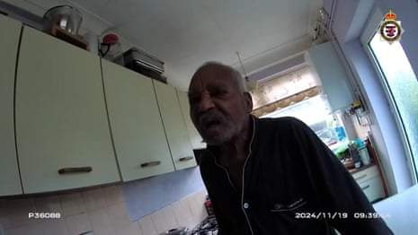
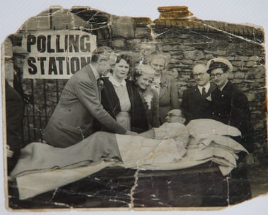

When police officers sat Mary Dainton down last year and told her they needed to talk about her grandmother, she asked at once: “Have they caught him?”
The officer confirmed they had a suspect for the rape and murder of Dainton’s grandmother, Louisa Dunne, almost 60 years earlier.
“I sat there completely stunned. I went off into this surreal space,” said Dainton. “I didn’t feel anything in my heart. I just thought, this is not real. I said: ‘How can you be sure?’ And they told me.”
Advances in DNA meant police had established that the killer was Ryland Headley, a railway worker who at the time of the murder in 1967 lived a mile and a half from 75-year-old Dunne’s home in Bristol.
“I said something to the effect of, my goodness, how old is he? They said: 92. I asked the police: ‘Was he married? Did he have children?’ All they could say was: ‘He’s had a life.’ So I presume that meant he was and he did have children. All I could think was, his poor family too. I don’t think anybody could do that unless they had a very distorted view of what is right and what is wrong.”

Louisa Dunne in about 1927.Photograph: Avon and Somerset police/PA
The arrest of Headley and his trial at Bristol crown court has brought back many memories and feelings. Dainton, 78, did not know her grandmother well – there was something of a family rift – but the impact of the murder never left her and other relatives.
“I only met her once when I was a teenager. I remember my grandmother being very keen to be friendly with me and she held my hand very, very tightly.”
Dainton’s grandmother was married to a well-known local Labour politician, Ted Parker. “Mum said Gran used to join in with the political chat that went on in the house. My grandmother supported my grandfather. She must have been in the position of a lot of women where she ran the house and looked after the children while he went on with his career.”
After Parker died, Dainton’s grandmother married again. Her second husband, a nightwatchman, John Dunne, also died, and by 1967 she was living alone. Dainton said: “I can’t imagine what it was like even living on your own when you’ve been widowed twice.”
Dainton was a 20-year-old art student when her grandmother was murdered. “I picked up the [Bristol] Evening Post. At the back, they had the obituaries. And there it was, a tiny little column about my grandmother. I caught the bus to see my mum. She was in a bit of a state emotionally. For me, it was such a shock.”
Dainton was told that Dunne had been raped. “I think particularly then it [rape] had a kind of stigma. People imagine things about the victim.”
Dainton’s mother, Edna, did not want to talk about the crime. “She told me, basically, ‘Dad and I will handle this. You go away, live your life.’” The default response, Dainton said, was to put on a “stiff upper lip” – but it turned out not to be a good strategy.
“My mother had a breakdown. I think she suffered from depression later – she found it very hard to make friends. We weren’t a very close family in the first place, but what there was in the family fell to pieces.”
The years passed and every now and then, the memories of Dainton’s grandmother crept up on her.
“Years later, I started to think about her. I was going to try and do a series of paintings about my family. I got the pictures out of my grandmother and I suddenly realised I knew nothing about her. And the memories came in then.”
Police bodycam footage shows moment of Ryland Headley's arrest – video
Dainton resigned herself to the idea that nobody would be caught. “I accepted that some murders never get solved. Some people have to live with that emptiness and that sadness.” She read detective books and knew about DNA but it did not strike her it could help solve her grandmother’s killing. “I never believed they would be able to trace him.”
The arrest has made her think again about what Dunne must have suffered. “I think it’s appalling. The poor woman. He was in his 30s and he was a reasonably sized man. And she was tiny. She was extremely skinny and small. It must have been absolutely terrifying. I feel extremely sad. I think he’s probably told himself lies in order to cope with it and he will never probably acknowledge what he’s done.”
Louisa Dunne, in hat and rosette, pictured with first husband Ted Parker who was on leave from Southmead hospital to vote in 1945 election.
Dainton is grateful that over the years detectives kept reviewing the crime. To her, it is not a cold case.
“I’ve encountered people who’ve said to me: ‘Why are the police wasting their time and their money on this?’ But this is the worst crime you can commit as far as I’m concerned.
“Rape and murder are horrendous. Are you saying that because somebody is old and because it’s this amount of time between when it happened and when they finally found out who it was, justice doesn’t have to be done?
“We have laws. We have punishments. And if they aren’t followed through and pursued as best we can, then there’s absolutely no point in having laws. We might just as well all be anarchists.”
Now she would like to find out more about Dunne.
“My main questions now are about my grandmother and her life. When she was alive, there weren’t that many choices for women. I get the feeling that she was quite feisty. She probably had quite a lot of strong feelings and beliefs herself.”
In photos, Dainton has noticed that Dunne was usually in the second row. “She’s nearly always putting her head round somebody else’s head. I got the idea that maybe it was a difficult life being in the second row to a man who was very clever and very powerful and very idealistic.”
Dainton sometimes asks herself why she feels so upset about a woman she did not know well.
“But I do feel connected to her and I’ve got no idea why except DNA. The thing that caught him, it’s caught me. I do feel deeply linked to her.”
- Information and support for anyone affected by rape or sexual abuse issues is available from the following organisations. In the UK, Rape Crisis offers support on 0808 500 2222 in England and Wales, 0808 801 0302 in Scotland , or 0800 0246 991 in Northern Ireland . In the US, Rainn offers support on 800-656-4673. In Australia, support is available at 1800Respect (1800 737 732). Other international helplines can be found at ibiblio.org/rcip/internl.htm